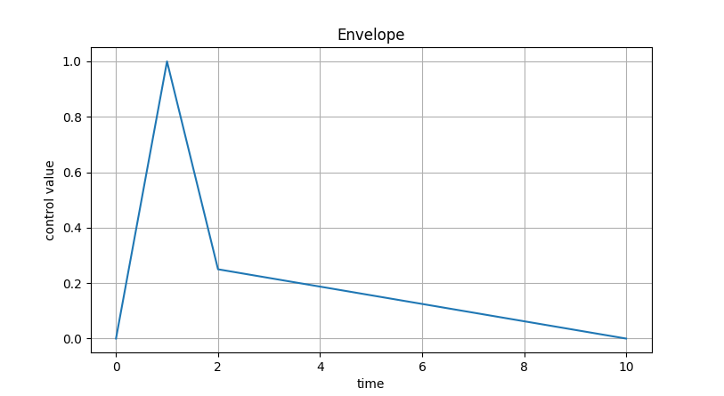

Tutorial 5: Audio musaicking parameters
One of the main advantages of the Mosaic class, is that it allows to generate different audio mosaic versions
from the same instance, or corpus-target pairing. In other words, a Mosaic instance works as a virtual representation,
or blueprint of an audio mosaic, rather than the audio mosaic itself.
This allows to play and experiment with different settings, hear the results, all without having to rebuild the
Corpus and/or the Mosaic from scratch everytime. Thus, the resulting audio will depend on the many
audio parameters one can pass to the to_audio() method.
To demonstrate this, let’s consider different cases with the same Mosaic instance.
from gamut.features import Mosaic
# first load .gamut mosaic from disk
mosaic = Mosaic().read('/path/to/my_mosaic.gamut')
Now, let’s generate audio using the default arguments:
# convert to audio mosaic using arguments and play it.
mosaic.to_audio().play()
Optionally, we can pass different arguments to fine-tune the final output. For instance, setting the grain duration:
# set grain duration to 0.5 seconds
mosaic.to_audio(grain_dur=0.5).play()
As with most of arguments in the to_audio() method, we can use a list of values to dynamically (i.e., over time) change the parameter.
# set grain duration, gradually changing from 0.1 to 0.5 seconds, over the duration of the audio file
mosaic.to_audio(grain_dur=[0.1, 0.5]).play()
Similarly we can customize the grain envelope:
env = [0, 1, 0.25, 0.25, 0]
mosaic.to_audio(grain_env=env).play
This would result in the following grain envelope:

Warning
When specifying envelopes as a list, make sure that the envelope starts and ends in 0. Otherwise, you’ll likely get unintended audio clicks in the audio output with every grain.
Another convenient way of specifying time-varying or dynamic parameters, is through a
list of tuples, here each tuple is the (x, y) coordinates of the parameter —
x being time, and y being the parameter value.
env = [
(0, 0),
(1, 1),
(2, 0.25),
(10, 0),
]
mosaic.to_audio(grain_env=env).play
This results is the following grain envelope:
{kind=link}
Warning
When specifying a control parameter as a list of tuples, make sure the x values appear in incremental order. For instance, these lists would all throw an error:
[(0, 0), (0, 1)]`[(0, 0), (1, 1), (0, 1)]`[(0, 0), (1, 1), (50, 0.5), (10, 0)]`
Finally, let’s consider a more complex version, changing more than a single parameter.
In this case, we’ll change:
corpus_weights: This controls the likelihood of using the corpus (instead of the original audio target) for a given segment or grain. By default, this is set to1. Although it’s not quite the same, this is somewhat equivalent to controlling the dry-wet mix between corpus and target.grain_env: grain envelope.grain_dur: grain duration, in seconds.stretch_factor: inverse playback rate, where 2 is twice as slow, 0.5 is twice as fast, and so on.
# gradual change, from only using grains in corpus, to only using grains in original audio target
corpus_weights = [1, 0]
# a somewhat sharp and percussive grain envelope
grain_env = [
(0, 0),
(1, 1),
(2, 0.5),
(15, 0),
]
# playback at original speed (1.0), and half way gradually slow down to twice the speed (2.0)
stretch_factor = [1, 1, 2]
# convert to audio
audio = mosaic.to_audio(
grain_env=grain_env,
corpus_weights=corpus_weights,
stretch_factor=stretch_factor,
)
# playback audio mosaic
audio.play()
# write audio mosaic to disk
audio.write('./my_cool_audio_mosaic.wav')
Note
To learn more about all available audio parameters, see the documentation: gamut.features.Mosaic.to_audio.